Unit 9
Hydrogen
Hydrogen

After studying this unit, you will be able to
“Hydrogen, the most abundant element in the universe and the third most abundant on the surface of the globe, is being visualised as the major future source of energy.”
Hydrogen has the simplest atomic structure among all the elements around us in Nature. In atomic form it consists of only one proton and one electron. However, in elemental form it exists as a diatomic (H2) molecule and is called dihydrogen. It forms more compounds than any other element. Do you know that the global concern related to energy can be overcome to a great extent by the use of hydrogen as a source of energy? In fact, hydrogen is of great industrial importance as you will learn in this unit.
9.1 Position of Hydrogen in the Periodic Table
Hydrogen is the first element in the periodic table. However, its placement in the periodic table has been a subject of discussion in the past. As you know by now that the elements in the periodic table are arranged according to their electronic configurations.
Hydrogen has electronic configuration 1s1. On one hand, its electronic configuration is similar to the outer electronic configuration (ns1) of alkali metals , which belong to the first group of the periodic table. On the other hand, like halogens (with ns2np5 configuration belonging to the seventeenth group of the periodic table), it is short by one electron to the corresponding noble gas configuration, helium (1s2). Hydrogen, therefore, has resemblance to alkali metals, which lose one electron to form unipositive ions, as well as with halogens, which gain one electron to form uninegative ion. Like alkali metals, hydrogen forms oxides, halides and sulphides. However, unlike alkali metals, it has a very high ionization enthalpy and does not possess metallic characteristics under normal conditions. In fact, in terms of ionization enthalpy, hydrogen resembles more with halogens, ∆i H of Li is 520 kJ mol–1, F is 1680 kJ mol–1 and that of H is 1312 kJ mol–1. Like halogens, it forms a diatomic molecule, combines with elements to form hydrides and a large number of covalent compounds. However, in terms of reactivity, it is very low as compared to halogens.
Inspite of the fact that hydrogen, to a certain extent resembles both with alkali metals and halogens, it differs from them as well. Now the pertinent question arises as where should it be placed in the periodic table? Loss of the electron from hydrogen atom results in nucleus (H+) of ~1.5×10–3 pm size. This is extremely small as compared to normal atomic and ionic sizes of 50 to 200pm. As a consequence, H+ does not exist freely and is always associated with other atoms or molecules. Thus, it is unique in behaviour and is, therefore, best placed separately in the periodic table (Unit 3).
9.2 DIHYDROGEN, H2
9.2.1 Occurrence
Dihydrogen is the most abundant element in the universe (70% of the total mass of the universe) and is the principal element in the solar atmosphere. The giant planets Jupiter and Saturn consist mostly of hydrogen. However, due to its light nature, it is much less abundant (0.15% by mass) in the earth’s atmosphere. Of course, in the combined form it constitutes 15.4% of the earth’s crust and the oceans. In the combined form besides in water, it occurs in plant and animal tissues, carbohydrates, proteins, hydrides including hydrocarbons and many other compounds.
9.2.2 Isotopes of Hydrogen
Hydrogen has three isotopes: protium, 11H, deuterium, 21H or D and tritium, 31H or T. Can you guess how these isotopes differ from each other? These isotopes differ from one another in respect of the presence of neutrons. Ordinary hydrogen, protium, has no neutrons, deuterium (also known as heavy hydrogen) has one and tritium has two neutrons in the nucleus. In the year 1934, an American scientist, Harold C. Urey, got Nobel Prize for separating hydrogen isotope of mass number 2 by physical methods.
The predominant form is protium. Terrestrial hydrogen contains 0.0156% of deuterium mostly in the form of HD. The tritium concentration is about one atom per 1018 atoms of protium. Of these isotopes, only tritium is radioactive and emits low energy β– particles (t½, 12.33 years).
Table 9.1 Atomic and Physical Properties of Hydrogen
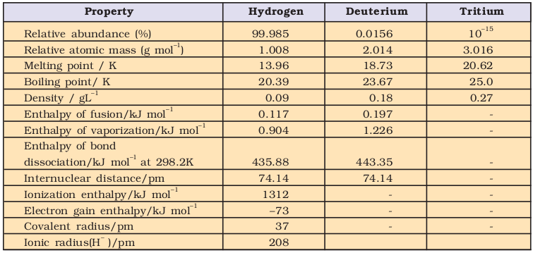
Since the isotopes have the same electronic configuration, they have almost the same chemical properties. The only difference is in their rates of reactions, mainly due to their different enthalpy of bond dissociation (Table 9.1). However, in physical properties these isotopes differ considerably due to their large mass differences.
9.3 PREPARATION OF DIHYDROGEN, H2
There are a number of methods for preparing dihydrogen from metals and metal hydrides.
9.3.1 Laboratory Preparation of Dihydrogen
(i) It is usually prepared by the reaction of granulated zinc with dilute hydrochloric acid.
Zn + 2H+ → Zn2+ + H2
(ii) It can also be prepared by the reaction of zinc with aqueous alkali.
Zn + 2NaOH → Na2ZnO2 + H2
Sodium zincate
9.3.2 Commercial Production of Dihydrogen
The commonly used processes are outlined below:
(i) Electrolysis of acidified water using platinum electrodes gives hydrogen.
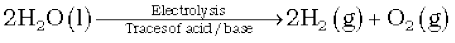
(ii) High purity (>99.95%) dihydrogen is obtained by electrolysing warm aqueous barium hydroxide solution between nickel electrodes.
(iii) It is obtained as a byproduct in the manufacture of sodium hydroxide and chlorine by the electrolysis of brine solution. During electrolysis, the reactions that take place are:
at anode: 2Cl–(aq) → Cl2(g) + 2e–
at cathode: 2H2O (l) + 2e–→ H2(g) + 2OH–(aq)
The overall reaction is
2Na+ (aq) + 2Cl–(aq) + 2H2O(l)
↓
Cl2(g) + H2(g) + 2Na+ (aq) + 2OH–(aq)
(iv) Reaction of steam on hydrocarbons or coke at high temperatures in the presence of catalyst yields hydrogen.
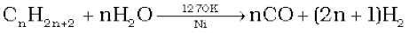
e.g.,
The mixture of CO and H2 is called water gas. As this mixture of CO and H2 is used for the synthesis of methanol and a number of hydrocarbons, it is also called synthesis gas or ‘syngas’. Nowadays ‘syngas’ is produced from sewage, saw-dust, scrap wood, newspapers etc. The process of producing ‘syngas’ from coal is called ‘coal gasification’.
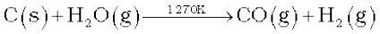
The production of dihydrogen can be increased by reacting carbon monoxide of syngas mixtures with steam in the presence of iron chromate as catalyst.
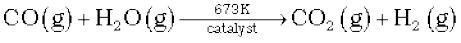
This is called water-gas shift reaction. Carbon dioxide is removed by scrubbing with sodium arsenite solution.
Presently ~77% of the industrial dihydrogen is produced from petro-chemicals, 18% from coal, 4% from electrolysis of aqueous solutions and 1% from other sources.
9.4 PROPERTIES OF DIHYDROGEN
9.4.1 Physical Properties
Dihydrogen is a colourless, odourless, tasteless, combustible gas. It is lighter than air and insoluble in water. Its other physical properties alongwith those of deuterium are given in Table 9.1.
9.4.2 Chemical Properties
The chemical behaviour of dihydrogen (and for that matter any molecule) is determined, to a large extent, by bond dissociation enthalpy. The H–H bond dissociation enthalpy is the highest for a single bond between two atoms of any element. What inferences would you draw from this fact ? It is because of this factor that the dissociation of dihydrogen into its atoms is only ~0.081% around 2000K which increases to 95.5% at 5000K. Also, it is relatively inert at room temperature due to the high H–H bond enthalpy. Thus, the atomic hydrogen is produced at a high temperature in an electric arc or under ultraviolet radiations. Since its orbital is incomplete with 1s1 electronic configuration, it does combine with almost all the elements. It accomplishes reactions by (i) loss of the only electron to give H+, (ii) gain of an electron to form H–, and (iii) sharing electrons to form a single covalent bond.
The chemistry of dihydrogen can be illustrated by the following reactions:
Reaction with halogens: It reacts with halogens, X2 to give hydrogen halides, HX,

While the reaction with fluorine occurs even in the dark, with iodine it requires a catalyst.
Reaction with dioxygen: It reacts with dioxygen to form water. The reaction is highly exothermic.
2H2(g) + O2 (g)  2H2O(l);
2H2O(l);
 = –285.9 kJ mol–1
= –285.9 kJ mol–1
Reaction with dinitrogen: With dinitrogen it forms ammonia.
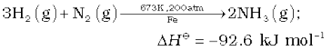
This is the method for the manufacture of ammonia by the Haber process.
Reactions with metals: With many metals it combines at a high temperature to yield the corresponding hydrides (section 9.5)
H2(g) +2M(g) → 2MH(s);
where M is an alkali metal
Reactions with metal ions and metal oxides: It reduces some metal ions in aqueous solution and oxides of metals (less active than iron) into corresponding metals.
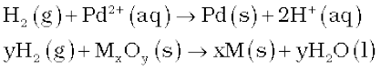
Reactions with organic compounds: It reacts with many organic compounds in the presence of catalysts to give useful hydrogenated products of commercial importance. For example :
(i) Hydrogenation of vegetable oils using nickel as catalyst gives edible fats (margarine and vanaspati ghee)
(ii) Hydroformylation of olefins yields aldehydes which further undergo reduction to give alcohols.
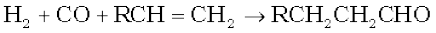
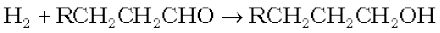
Problem 9.1
Comment on the reactions of dihydrogen with (i) chlorine, (ii) sodium, and (iii) copper(II) oxide
Solution
(i) Dihydrogen reduces chlorine into chloride (Cl–) ion and itself gets oxidised to H+ ion by chlorine to form hydrogen chloride. An electron pair is shared between H and Cl leading to the formation of a covalent molecule.
(ii) Dihydrogen is reduced by sodium to form NaH. An electron is transferred from Na to H leading to the formation of an ionic compound, Na+H–.
(iii) Dihydrogen reduces copper(II) oxide to copper in zero oxidation state and itself gets oxidised to H2O, which is a covalent molecule.
9.4.3 Uses of Dihydrogen
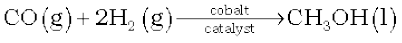
9.5 Hydrides
Dihydrogen, under certain reaction conditions, combines with almost all elements, except noble gases, to form binary compounds, called hydrides. If ‘E’ is the symbol of an element then hydride can be expressed as EHx (e.g., MgH2) or EmHn (e.g., B2H6).
The hydrides are classified into three categories :
(i) Ionic or saline or saltlike hydrides
(ii) Covalent or molecular hydrides
(iii) Metallic or non-stoichiometric hydrides
9.5.1 Ionic or Saline Hydrides
These are stoichiometric compounds of dihydrogen formed with most of the s-block elements which are highly electropositive in character. However, significant covalent character is found in the lighter metal hydrides such as LiH, BeH2 and MgH2. In fact BeH2 and MgH2 are polymeric in structure. The ionic hydrides are crystalline, non-volatile and non-conducting in solid state. However, their melts conduct electricity and on electrolysis liberate dihydrogen gas at anode, which confirms the existence of H– ion.
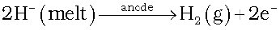
Saline hydrides react violently with water producing dihydrogen gas.
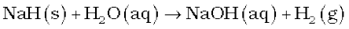
Lithium hydride is rather unreactive at moderate temperatures with O2 or Cl2. It is, therefore, used in the synthesis of other useful hydrides, e.g.,
8LiH + Al2Cl6 → 2LiAlH4 + 6LiCl
2LiH + B2H6 → 2LiBH4
9.5.2 Covalent or Molecular Hydride
Dihydrogen forms molecular compounds with most of the p-block elements. Most familiar examples are CH4, NH3, H2O and HF. For convenience hydrogen compounds of non-metals have also been considered as hydrides. Being covalent, they are volatile compounds.
Molecular hydrides are further classified according to the relative numbers of electrons and bonds in their Lewis structure into :
(i) electron-deficient, (ii) electron-precise, and (iii) electron-rich hydrides.
An electron-deficient hydride, as the name suggests, has too few electrons for writing its conventional Lewis structure. Diborane (B2H6) is an example. In fact all elements of group 13 will form electron-deficient compounds. What do you expect from their behaviour? They act as Lewis acids i.e., electron acceptors.
Electron-precise compounds have the required number of electrons to write their conventional Lewis structures. All elements of group 14 form such compounds (e.g., CH4) which are tetrahedral in geometry.
Electron-rich hydrides have excess electrons which are present as lone pairs. Elements of group 15-17 form such compounds. (NH3 has 1- lone pair, H2O – 2 and HF –3 lone pairs). What do you expect from the behaviour of such compounds ? They will behave as Lewis bases i.e., electron donors. The presence of lone pairs on highly electronegative atoms like N, O and F in hydrides results in hydrogen bond formation between the molecules. This leads to the association of molecules.
Problem 9.2
Would you expect the hydrides of N, O and F to have lower boiling points than the hydrides of their subsequent group members ? Give reasons.
Solution
On the basis of molecular masses of NH3, H2O and HF, their boiling points are expected to be lower than those of the subsequent group member hydrides. However, due to higher electronegativity of N, O and F, the magnitude of hydrogen bonding in their hydrides will be quite appreciable. Hence, the boiling points NH3, H2O and HF will be higher than the hydrides of their subsequent group members.
9.5.3 Metallic or Non-stoichiometric (or Interstitial ) Hydrides
These are formed by many d-block and f-block elements. However, the metals of group 7, 8 and 9 do not form hydride. Even from group 6, only chromium forms CrH. These hydrides conduct heat and electricity though not as efficiently as their parent metals do. Unlike saline hydrides, they are almost always non-stoichiometric, being deficient in hydrogen. For example, LaH2.87, YbH2.55, TiH1.5–1.8, ZrH1.3–1.75, VH0.56, NiH0.6–0.7, PdH0.6–0.8 etc. In such hydrides, the law of constant composition does not hold good.
Earlier it was thought that in these hydrides, hydrogen occupies interstices in the metal lattice producing distortion without any change in its type. Consequently, they were termed as interstitial hydrides. However, recent studies have shown that except for hydrides of Ni, Pd, Ce and Ac, other hydrides of this class have lattice different from that of the parent metal. The property of absorption of hydrogen on transition metals is widely used in catalytic reduction / hydrogenation reactions for the preparation of large number of compounds. Some of the metals (e.g., Pd, Pt) can accommodate a very large volume of hydrogen and, therefore, can be used as its storage media. This property has high potential for hydrogen storage and as a source of energy.
Problem 9.3
Can phosphorus with outer electronic configuration 3s23p3 form PH5 ?
Solution
Although phosphorus exhibits +3 and +5 oxidation states, it cannot form PH5. Besides some other considerations, high ∆aH value of dihydrogen and ∆egH value of hydrogen do not favour to exhibit the highest oxidation state of P, and consequently the formation of PH5.
9.6 WATER
A major part of all living organisms is made up of water. Human body has about 65% and some plants have as much as 95% water. It is a crucial compound for the survival of all life forms. It is a solvent of great importance. The distribution of water over the earth’s surface is not uniform. The estimated world water supply is given in Table 9.2
Table 9.2 Estimated World Water Supply
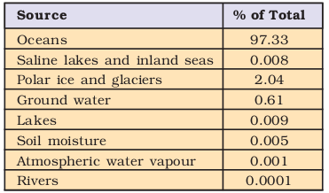
9.6.1 Physical Properties of Water
It is a colourless and tasteless liquid. Its physical properties are given in Table 9.3 along with the physical properties of heavy water.
The unusual properties of water in the condensed phase (liquid and solid states) are due to the presence of extensive hydrogen bonding between water molecules. This leads to high freezing point, high boiling point, high heat of vaporisation and high heat of fusion in comparison to H2S and H2Se. In comparison to other liquids, water has a higher specific heat, thermal conductivity, surface tension, dipole moment and dielectric constant, etc. These properties allow water to play a key role in the biosphere.
The high heat of vaporisation and heat capacity are responsible for moderation of the climate and body temperature of living beings. It is an excellent solvent for transportation of ions and molecules required for plant and animal metabolism. Due to hydrogen bonding with polar molecules, even covalent compounds like alcohol and carbohydrates dissolve in water.
Table 9.3 Physical Properties of H2O and D2O
9.6.2 Structure of Water
Fig. 9.1 (a) The bent structure of water; (b) the water molecule as a dipole and
(c) the orbital overlap picture in water molecule.
It is a highly polar molecule, (Fig 9.1(b)). Its orbital overlap picture is shown in Fig. 9.1(c). In the liquid phase water molecules are associated together by hydrogen bonds.
The crystalline form of water is ice. At atmospheric pressure ice crystallises in the hexagonal form, but at very low temperatures it condenses to cubic form. Density of ice is less than that of water. Therefore, an ice cube floats on water. In winter season ice formed on the surface of a lake provides thermal insulation which ensures the survival of the aquatic life. This fact is of great ecological significance.
9.6.3 Structure of Ice
Ice has a highly ordered three dimensional hydrogen bonded structure as shown in Fig. 9.2.
Examination of ice crystals with X-rays shows that each oxygen atom is surrounded tetrahedrally by four other oxygen atoms at a distance of 276 pm.
Hydrogen bonding gives ice a rather open type structure with wide holes. These holes can hold some other molecules of appropriate size interstitially.
9.6.4 Chemical Properties of Water
Water reacts with a large number of substances. Some of the important reactions are given below.
(1) Amphoteric Nature: It has the ability to act as an acid as well as a base i.e., it behaves as an amphoteric substance. In the Brönsted sense it acts as an acid with NH3 and a base with H2S.
H2O(l) + NH3(aq) → OH–(aq) + NH4+
H2O(l) + H2S(aq) → H3O+(aq) + HS– (aq)
The auto-protolysis (self-ionization) of water takes place as follows :
H2O(l) + H2O(l) → H3O+(aq) + OH–(aq)
acid-1 base-2 acid-2 base-1
(acid) (base) (conjugate acid) (conjugate base)
(2) Redox Reactions Involving Water: Water can be easily reduced to dihydrogen by highly electropositive metals.
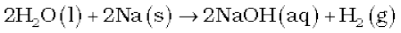
Thus, it is a great source of dihydrogen.
Water is oxidised to O2 during photosynthesis.
6CO2(g) + 12H2O(l) → C6H12O6(aq) + 6H2O(l) + 6O2(g)
With fluorine also it is oxidised to O2.
2F2(g) + 2H2O(l) → 4H+ (aq) + 4F–(aq) + O2(g)
(3) Hydrolysis Reaction: Due to high dielectric constant, it has a very strong hydrating tendency. It dissolves many ionic compounds. However, certain covalent and some ionic compounds are hydrolysed in water.
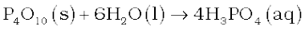

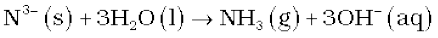
(4) Hydrates Formation: From aqueous solutions many salts can be crystallised as hydrated salts. Such an association of water is of different types viz.,
(i) coordinated water e.g.,
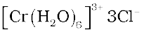
(ii) interstitial water e.g., 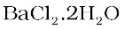
(iii) hydrogen-bonded water e.g.,
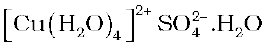in 
Problem 9.4
How many hydrogen-bonded water molecule(s) are associated in CuSO4.5H2O?
Solution
Only one water molecule, which is outside the brackets (coordination sphere), is hydrogen-bonded. The other four molecules of water are coordinated.
9.6.5 Hard and Soft Water
Rain water is almost pure (may contain some dissolved gases from the atmosphere). Being a good solvent, when it flows on the surface of the earth, it dissolves many salts. Presence of calcium and magnesium salts in the form of hydrogencarbonate, chloride and sulphate in water makes water ‘hard’. Hard water does not give lather with soap. Water free from soluble salts of calcium and magnesium is called Soft water. It gives lather with soap easily.
Hard water forms scum/precipitate with soap. Soap containing sodium stearate (C17H35COONa) reacts with hard water to precipitate out Ca/Mg stearate.
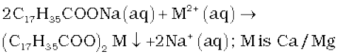
It is, therefore, unsuitable for laundry. It is harmful for boilers as well, because of deposition of salts in the form of scale. This reduces the efficiency of the boiler. The hardness of water is of two types: (i) temporary hardness, and (ii) permanent hardness.
9.6.6 Temporary Hardness
Temporary hardness is due to the presence of magnesium and calcium hydrogen-carbonates. It can be removed by :
(i) Boiling: During boiling, the soluble Mg(HCO3)2 is converted into insoluble Mg(OH)2 and Ca(HCO3)2 is changed to insoluble CaCO3. It is because of high solubility product of Mg(OH)2 as compared to that of MgCO3, that Mg(OH)2 is precipitated. These precipitates can be removed by filtration. Filtrate thus obtained will be soft water.
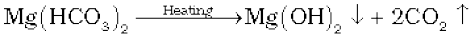
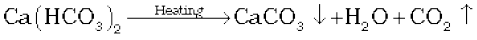
(ii) Clark’s method: In this method calculated amount of lime is added to hard water. It precipitates out calcium carbonate and magnesium hydroxide which can be filtered off.
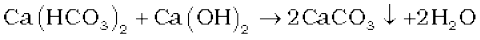
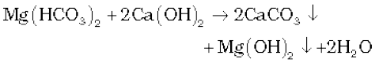
9.6.7 Permanent Hardness
It is due to the presence of soluble salts of magnesium and calcium in the form of chlorides and sulphates in water. Permanent hardness is not removed by boiling. It can be removed by the following methods:
(i) Treatment with washing soda (sodium carbonate): Washing soda reacts with soluble calcium and magnesium chlorides and sulphates in hard water to form insoluble carbonates.
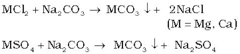
(ii) Calgon’s method: Sodium hexameta-phosphate (Na6P6O18), commercially called ‘calgon’, when added to hard water, the following reactions take place.
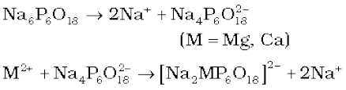
The complex anion keeps the Mg2+ and Ca2+ ions in solution.
(iii) Ion-exchange method: This method is also called zeolite/permutit process. Hydrated sodium aluminium silicate is zeolite/permutit. For the sake of simplicity, sodium aluminium silicate (NaAlSiO4) can be written as NaZ. When this is added in hard water, exchange reactions take place.
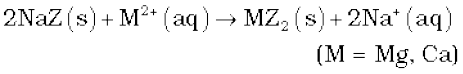
Permutit/zeolite is said to be exhausted when all the sodium in it is used up. It is regenerated for further use by treating with an aqueous sodium chloride solution.
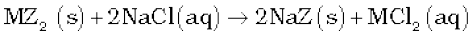
(iv) Synthetic resins method: Nowadays hard water is softened by using synthetic cation exchangers. This method is more efficient than zeolite process. Cation exchange resins contain large organic molecule with - SO3H group and are water insoluble. Ion exchange resin (RSO3H) is changed to RNa by treating it with NaCl. The resin exchanges Na+ ions with Ca2+ and Mg2+ ions present in hard water to make the water soft. Here R is resin anion.
2RH(s) + M2+(aq) → R2M(s) + 2Na+(aq)
The resin can be regenerated by adding aqueous NaCl solution.
Pure de-mineralised (de-ionized) water free from all soluble mineral salts is obtained by passing water successively through a cation exchange (in the H+ form) and an anion-exchange (in the OH– form) resins:
2RH(s) + M2+(aq) → MR2(s) + 2H+(aq)
In this cation exchange process, H+ exchanges for Na+, Ca2+, Mg2+ and other cations present in water. This process results in proton release and thus makes the water acidic. In the anion exchange process:
RNH2(s) + H2O(l) → RNH3+.OH–(s)
RNH3+.OH–(s) + X– (aq) → RNH3+.X– (s) + OH– (aq)
OH–exchanges for anions like Cl–, HCO3–, SO42–etc. present in water. OH– ions, thus, liberated neutralise the H+ ions set free in the cation exchange.

The exhausted cation and anion exchange resin beds are regenerated by treatment with dilute acid and alkali solutions respectively.
9.7 Hydrogen Peroxide (H2O2)
Hydrogen peroxide is an important chemical used in pollution control treatment of domestic and industrial effluents.
9.7.1 Preparation
It can be prepared by the following methods.
(i) Acidifying barium peroxide and removing excess water by evaporation under reduced pressure gives hydrogen peroxide.
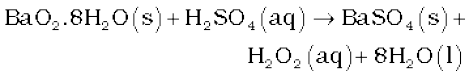
(ii) Peroxodisulphate, obtained by electrolytic oxidation of acidified sulphate solutions at high current density, on hydrolysis yields hydrogen peroxide.
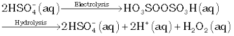
This method is now used for the laboratory preparation of D2O2.

(iii) Industrially it is prepared by the auto-oxidation of 2-alklylanthraquinols.
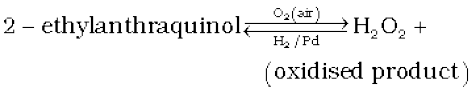
In this case 1% H2O2 is formed. It is extracted with water and concentrated to ~30% (by mass) by distillation under reduced pressure. It can be further concentrated to ~85% by careful distillation under low pressure. The remaining water can be frozen out to obtain pure H2O2.
9.7.2 Physical Properties
In the pure state H2O2 is an almost colourless (very pale blue) liquid. Its important physical properties are given in Table 9.4.
H2O2 is miscible with water in all proportions and forms a hydrate H2O2.H2O(mp 221K). A 30% solution of H2O2 is marketed as ‘100 volume’ hydrogen peroxide. It means that one millilitre of 30% H2O2 solution will give 100 mL of oxygen at STP. Commercially marketed sample is 10 V, which means that the sample contains 3% H2O2.
Problem 9.5
Calculate the strength of 10 volume solution of hydrogen peroxide.
Solution
10 volume solution of H2O2 means that 1L of this H2O2 solution will give 10 L of oxygen at STP

234 g 22.7 L at STP
68 g
On the basis of above equation 22.7 L of O2 is produced from 68 g H2O2 10L of O2 at STP is produced from

Therefore, strength of H2O2 in 10 volume H2O2 solution = 30 g/L = 3% H2O2 solution
Table 9.4 Physical Properties of Hydrogen Peroxide
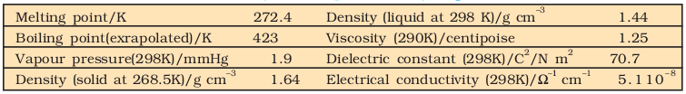
9.7.3 Structure
Hydrogen peroxide has a non-planar structure. The molecular dimensions in the gas phase and solid phase are shown in Fig 9.3

Fig. 9.3 (a) H2O2 structure in gas phase, dihedral angle is 111.5°. (b) H2O2 structure in solid phase at 110K, dihedral angle is 90.2°.
9.7.4 Chemical Properties
It acts as an oxidising as well as reducing agent in both acidic and alkaline media. Simple reactions are described below.
(i) Oxidising action in acidic medium

(ii) Reducing action in acidic medium
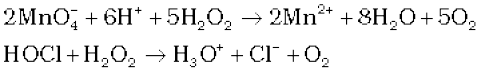
(iii) Oxidising action in basic medium
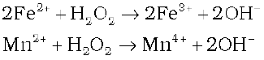
(iv) Reducing action in basic medium
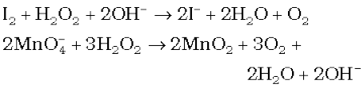
9.7.5 Storage
H2O2 decomposes slowly on exposure to light.

In the presence of metal surfaces or traces of alkali (present in glass containers), the above reaction is catalysed. It is, therefore, stored in wax-lined glass or plastic vessels in dark. Urea can be added as a stabiliser. It is kept away from dust because dust can induce explosive decomposition of the compound.
9.7.6 Uses
Its wide scale use has led to tremendous increase in the industrial production of H2O2. Some of the uses are listed below:
(i) In daily life it is used as a hair bleach and as a mild disinfectant. As an antiseptic it is sold in the market as perhydrol.
(ii) It is used to manufacture chemicals like sodium perborate and per-carbonate, which are used in high quality detergents.
(iii) It is used in the synthesis of hydroquinone, tartaric acid and certain food products and pharmaceuticals (cephalosporin) etc.
(iv) It is employed in the industries as a bleaching agent for textiles, paper pulp, leather, oils, fats, etc.
(v) Nowadays it is also used in Environmental (Green) Chemistry. For example, in pollution control treatment of domestic and industrial effluents, oxidation of cyanides, restoration of aerobic conditions to sewage wastes, etc.
9.8 HEAVY WATER, D2O
It is extensively used as a moderator in nuclear reactors and in exchange reactions for the study of reaction mechanisms. It can be prepared by exhaustive electrolysis of water or as a by-product in some fertilizer industries. Its physical properties are given in Table 9.3. It is used for the preparation of other deuterium compounds, for example:

9.9 DIHYDROGEN AS A FUEL
Dihydrogen releases large quantities of heat on combustion. The data on energy released by combustion of fuels like dihydrogen, methane, LPG etc. are compared in terms of the same amounts in mole, mass and volume, are shown in Table 9.5.
From this table it is clear that on a mass for mass basis dihydrogen can release more energy than petrol (about three times). Moreover, pollutants in combustion of dihydrogen will be less than petrol. The only pollutants will be the oxides of dinitrogen (due to the presence of dinitrogen as impurity with dihydrogen). This, of course, can be minimised by injecting a small amount of water into the cylinder to lower the temperature so that the reaction between dinitrogen and dioxygen may not take place. However, the mass of the containers in which dihydrogen will be kept must be taken into consideration. A cylinder of compressed dihydrogen weighs about 30 times as much as a tank of petrol containing the same amount of energy. Also, dihydrogen gas is converted into liquid state by cooling to 20K. This would require expensive insulated tanks. Tanks of metal alloy like NaNi5, Ti–TiH2, Mg–MgH2 etc. are in use for storage of dihydrogen in small quantities. These limitations have prompted researchers to search for alternative techniques to use dihydrogen in an efficient way.
In this view Hydrogen Economy is an alternative. The basic principle of hydrogen economy is the transportation and storage of energy in the form of liquid or gaseous dihydrogen. Advantage of hydrogen economy is that energy is transmitted in the form of dihydrogen and not as electric power. It is for the first time in the history of India that a pilot project using dihydrogen as fuel was launched in October 2005 for running automobiles. Initially 5% dihydrogen has been mixed in CNG for use in four-wheeler vehicles. The percentage of dihydrogen would be gradually increased to reach the optimum level.
Nowadays, it is also used in fuel cells for generation of electric power. It is expected that economically viable and safe sources of dihydrogen will be identified in the years to come, for its usage as a common source of energy.
Table 9.5 The Energy Released by Combustion of Various Fuels in Moles, Mass and Volume
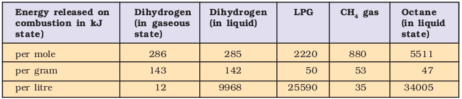
SUMMARY
Hydrogen is the lightest atom with only one electron. Loss of this electron results in an elementary particle, the proton. Thus, it is unique in character. It has three isotopes, namely : protium (11H),deuterium (D or 21H) and tritium (T or 31H). Amongst these three, only tritium is radioactive. Inspite of its resemblance both with alkali metals and halogens, it occupies a separate position in the periodic table because of its unique properties.
Hydrogen is the most abundant element in the universe. In the free state it is almost not found in the earth’s atmosphere. However, in the combined state, it is the third most abundant element on the earth’s surface.
Dihydrogen on the industrial scale is prepared by the water-gas shift reaction from petrochemicals. It is obtained as a byproduct by the electrolysis of brine.
The H–H bond dissociation enthalpy of dihydrogen (435.88 kJ mol–1) is the highest for a single bond between two atoms of any elements. This property is made use of in the atomic hydrogen torch which generates a temperature of ~4000K and is ideal for welding of high melting metals.
Though dihydrogen is rather inactive at room temperature because of very high negative dissociation enthalpy, it combines with almost all the elements under appropriate conditions to formhydrides. All the type of hydrides can be classified into three categories: ionic or saline hydrides, covalent or molecular hydrides and metallic or non-stoichiometric hydrides. Alkali metal hydrides are good reagents for preparing other hydride compounds. Molecular hydrides (e.g., B2H6, CH4, NH3, H2O) are of great importance in day-to-day life. Metallic hydrides are useful for ultrapurification of dihydrogen and as dihydrogen storage media.
Among the other chemical reactions of dihydrogen, reducing reactions leading to the formation hydrogen halides, water, ammonia, methanol, vanaspati ghee, etc. are of great importance. In metallurgical process, it is used to reduce metal oxides. In space programmes, it is used as a rocket fuel. In fact, it has promising potential for use as a non-polluting fuel of the near future(Hydrogen Economy).
Water is the most common and abundantly available substance. It is of a great chemical and biological significance. The ease with which water is transformed from liquid to solid and to gaseous state allows it to play a vital role in the biosphere. The water molecule is highly polar in nature due to its bent structure. This property leads to hydrogen bonding which is the maximum in ice and least in water vapour. The polar nature of water makes it: (a) a very good solvent for ionic and partially ionic compounds; (b) to act as an amphoteric (acid as well as base) substance; and (c) to form hydrates of different types. Its property to dissolve many salts, particularly in large quantity, makes it hard and hazardous for industrial use. Both temporary and permanent hardness can be removed by the use of zeolites, and synthetic ion-exchangers.
Heavy water, D2O is another important compound which is manufactured by the electrolytic enrichment of normal water. It is essentially used as a moderator in nuclear reactors.
Hydrogen peroxide, H2O2 has an interesting non-polar structure and is widely used as an industrial bleach and in pharmaceutical and pollution control treatment of industrial and domestic effluents.
EXERCISES
9.1 Justify the position of hydrogen in the periodic table on the basis of its electronic configuration.
9.2 Write the names of isotopes of hydrogen. What is the mass ratio of these isotopes?
9.3 Why does hydrogen occur in a diatomic form rather than in a monoatomic form under normal conditions?
9.4 How can the production of dihydrogen, obtained from ‘coal gasification’, be increased?
9.5 Describe the bulk preparation of dihydrogen by electrolytic method. What is the role of an electrolyte in this process ?
9.6 Complete the following reactions:
(i) 
(ii) 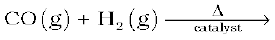
(iii) 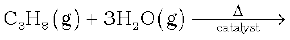
(iv) 
9.7 Discuss the consequences of high enthalpy of H–H bond in terms of chemical reactivity of dihydrogen.
9.8 What do you understand by (i) electron-deficient, (ii) electron-precise, and (iii) electron-rich compounds of hydrogen? Provide justification with suitable examples.
9.9 What characteristics do you expect from an electron-deficient hydride with respect to its structure and chemical reactions?
9.10 Do you expect the carbon hydrides of the type (CnH2n + 2) to act as ‘Lewis’ acid or base? Justify your answer.
9.11 What do you understand by the term “non-stoichiometric hydrides”? Do you expect this type of the hydrides to be formed by alkali metals? Justify your answer.
9.12 How do you expect the metallic hydrides to be useful for hydrogen storage? Explain.
9.13 How does the atomic hydrogen or oxy-hydrogen torch function for cutting and welding purposes ? Explain.
9.14 Among NH3, H2O and HF, which would you expect to have highest magnitude of hydrogen bonding and why?
9.15 Saline hydrides are known to react with water violently producing fire. Can CO2, a well known fire extinguisher, be used in this case? Explain.
9.16 Arrange the following
(i) CaH2, BeH2 and TiH2 in order of increasing electrical conductance.
(ii) LiH, NaH and CsH in order of increasing ionic character.
(iii) H–H, D–D and F–F in order of increasing bond dissociation enthalpy.
(iv) NaH, MgH2 and H2O in order of increasing reducing property.
9.17 Compare the structures of H2O and H2O2.
9.18 What do you understand by the term ’auto-protolysis’ of water? What is its significance?
9.19 Consider the reaction of water with F2 and suggest, in terms of oxidation and reduction, which species are oxidised/reduced.
9.20 Complete the following chemical reactions.
(i) 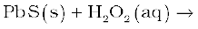
(ii) 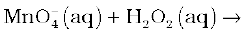
(iii)
(v) 
(vi) 
Classify the above into (a) hydrolysis, (b) redox and (c) hydration reactions.
9.21 Describe the structure of the common form of ice.
9.22 What causes the temporary and permanent hardness of water ?
9.23 Discuss the principle and method of softening of hard water by synthetic ion-exchange resins.
9.24 Write chemical reactions to show the amphoteric nature of water.
9.25 Write chemical reactions to justify that hydrogen peroxide can function as an oxidising as well as reducing agent.
9.26 What is meant by ‘demineralised’ water and how can it be obtained ?
9.27 Is demineralised or distilled water useful for drinking purposes? If not, how can it be made useful?
9.28 Describe the usefulness of water in biosphere and biological systems.
9.29 What properties of water make it useful as a solvent? What types of compound can it (i) dissolve, and (ii) hydrolyse ?
9.30 Knowing the properties of H2O and D2O, do you think that D2O can be used for drinking purposes?
9.31 What is the difference between the terms ‘hydrolysis’ and ‘hydration’ ?
9.32 How can saline hydrides remove traces of water from organic compounds?
9.33 What do you expect the nature of hydrides is, if formed by elements of atomic numbers 15, 19, 23 and 44 with dihydrogen? Compare their behaviour towards water.
9.34 Do you expect different products in solution when aluminium(III) chloride and potassium chloride treated separately with (i) normal water (ii) acidified water, and (iii) alkaline water? Write equations wherever necessary.
9.35 How does H2O2 behave as a bleaching agent?
9.36 What do you understand by the terms:
(i) hydrogen economy (ii) hydrogenation (iii) ‘syngas’ (iv) water-gas shift reaction (v) fuel-cell ?